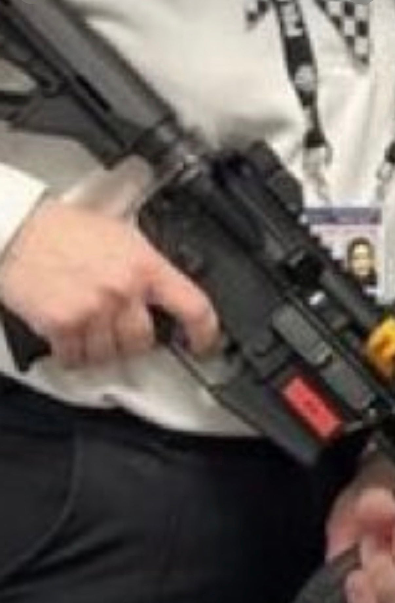

당당하게 방아쇠에 손넣고 사진찍어서
무슬림 테러리스트들도 방아쇠에 손가락 넣고다니면 안된다는것정도는 잘 안다

당당하게 방아쇠에 손넣고 사진찍어서
무슬림 테러리스트들도 방아쇠에 손가락 넣고다니면 안된다는것정도는 잘 안다
엄한데 사격하고 있노
이.슬람 국가 출신이라 군대안갔네 ㅋㅋㅋㅋㅋ
군대 2년 다녀온 애들이 왜 이렇게 아는척 하녜 ㅋㅋㅋㅋㅋㅋㅋ
군대를 2년이나 다녀왔으니 아는척을 하지요
전세계에서 봐도 한국 남자만큼 총기 이렇게 많이 써본사람이 드물텐데
그깔짝이라는 2년동안 방아쇠에 손대고있지말라고 계속 알려주니까? 그걸로 까딱잘못하면 사람이 죽으니까? 저게 방아쇠에 손가락 놓는게 습관이 되어버리면 사고나니까?
기본 이라는 말이 뭔지 모름?
있든 없든 당장 쏠거 아니면 손가락 빼놓는게 기본이고 그런 규칙이 세워진데는 이유가 있는거임
어허 븅신새끼 패지 말도록!
총을 다룰 때 가장 먼저 배우고 가장 중요하게 생각하는 것 중 하나가 "언제나 총알이 들어있는 것처럼 조심"하는 거임
총을 사용하는 사람은 방아쇠에 손가락 안걸고 총구를 사람에게 향하지 않게하는 것이 습관이 되어야 사고를 줄일 수 있음
더군다나 경찰이 사진 찍는 상황에서 저 ㅈㄹ하고 있는데 욕을 먹어야지
무슬림이 사람 죽이는건 사소한 일이긴 해
하나도 안 사소해....
옆에 직장상사 쏘고 싶었나보지
저런 직종에 어울리는 성별이 아님
밑에놈들은 실전경력이 개쩔잖아
영국서 저 경찰이 상받으니까, 사람들이 막 조리돌림하면서 겸사겸사 2년전 저 사진도 꺼내온거네
https://uk.news.yahoo.com/met-commissioner-slams-awful-abuse-212846777.html
https://www.linkedin.com/posts/fiona-shaik-umar-33055a28b_internationalwomensday-firearms-firearms-activity-7171910002683691008-68Ke
잘못한건 맞는데 사소한것도 맞음
무슬림이라 아님 여자라 한 실수가 아님
미국 경찰 수준이 보통 저럼 특히 연방 경찰말고
동네 카운티 쉐리프 이런 놈얘들은 훈련은 한 두달 밖에 안시키면서 무장은 무슨 이라크 파병 나가듯이 쥐어주는데 사고 안나는게 더 이상한 나라임
영국이었네 ㅅㅂ
태세전환ㅋㅋㅋㅋㅋㅋ
영국임
진짜 몰라서 그러는데 조정간안전 되어있으면 상관없는거아님?
저게 습관화되는게 위험한거지 만약에 장전되고 조정간 안전아닐때 저습관때문에 당기기라도 하면
사람하나 죽고시작하는거니까
절대안됨
너 폐급이냐?
몰라서 묻는다고 떡하니 써놨는데 꼭 이렇게 애미없는 댓글 다는놈들 나오더라
습관이 중요하지
아차 실수😜 하면 사람이 죽는다고
안전에는 타협이 있으면 안 됨
무조건 메뉴얼대로
안전 ”장치“가 있으면 안전 “습관”도 당연히 있어야지
어깨 견장에 계급이 없는거봐서 카뎃이나 학생이거나 그런거같은데...
올해 저 여경이 런던경찰에서 상 받았는데 2년전 사진 파묘해서 고로시하는거임
하이드라 마운트 달앗으면 ㅇㅈ햇을건대
총알도 없어뵈는구만 뭘 ㅋㅋㅋㅋ
총알이 있건없건 기본임
습관이란게 총알여부에 따라 쉽게 스위치가됨?
그리고 약실에 총알 들어있을지 어케암
군필인데도 저게 뭐가 문제 하는 애들은 군생활 어땠는지 감이옴
영국 경찰은 기본적으로 총기를 휴대하지 않고 비무장 경찰로 복무하다가 별도의 총기훈련(AFO)을 받고 시험에 통과해야만 총기를 사용할수있음.
해당 사진은 여성 무장 경찰 지원 독려를 위한 체험 프로그램에서
아직 정식 총기 교육을 받지않은 순경이 교보재 모조총기를 들고 찍은 기념 사진임.
혐오선동글이었네
당장 사람들이 저 여경을 자폭조끼 테러리스트로 만든 이미지를 뿌려대서, 서장이 그러지 말라고 열불난 상황임
미국도 아니고 오히려 차별에 린치당하는 사례인데 시방 ㅋㅋㅋㅋ
정신병자들 참 많아
총기 교육할때 제일 처음 배우는거긴한데 ㅋㅋ
저런거 습관도 습관인데 내 군생활 동안 실제로 총맞은 사람 봤었는데.. 사격 훈련중 바뻤던건지 뭔지 이등병이 약실 검사 똑바로 안해서 탄창만 제거하고 사격전에 단체로 앉아서 쉬는데서 휴식취하다 자기네 행보관한테 겨누고 쏘는 장난치다 실제로 발사해버린거임
사격훈련장이라 총소리는 원래 들리는데 갑자기 들린 비명과 너무 근처에서 격발된 큰 총성이 이게 비상사태라는걸 알려주더라 그와 동시에 비명들린곳을 쳐다보니까 옆중대 행보관이 그자리에서 옆으로 풀썩쓰러지고 미동도 안함 나중에 들은 얘기로 보니까 허벅지뼈를 관통했다더라...조심하라는데는 다 나름의 이유가 있는법이지
육군교도소 가야하는거 아님?
탄창 없다고 안심했나 아무리 그래도 습관이라는게
무슬림드립넷 ㄷㄷ
엥? 거사 전 기념 사진인데요?
저게 맞습니다
아무튼 니가멍청이야!